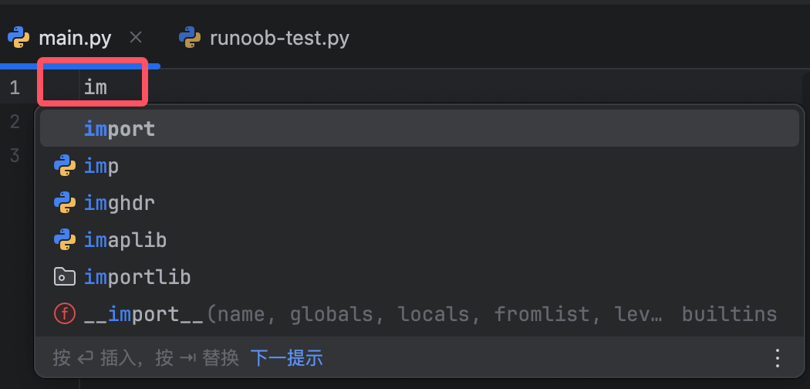
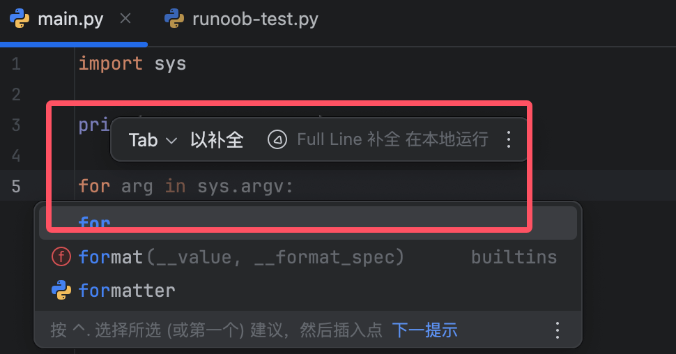
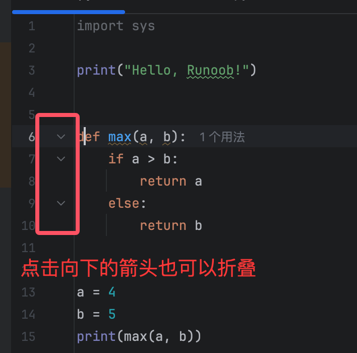
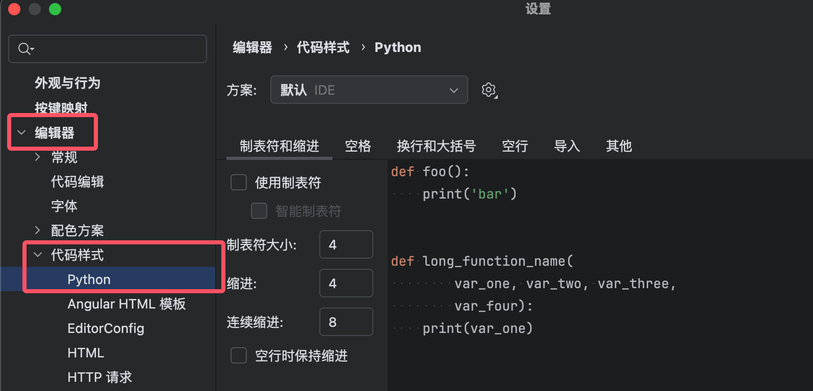
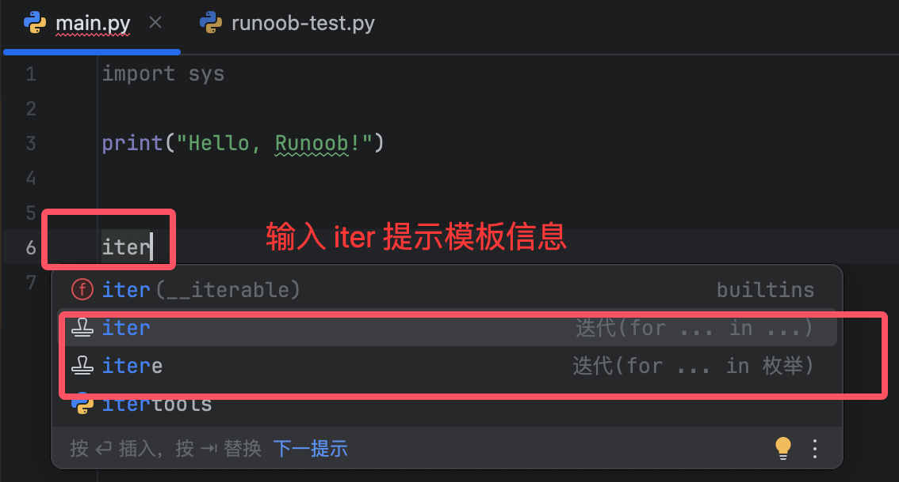
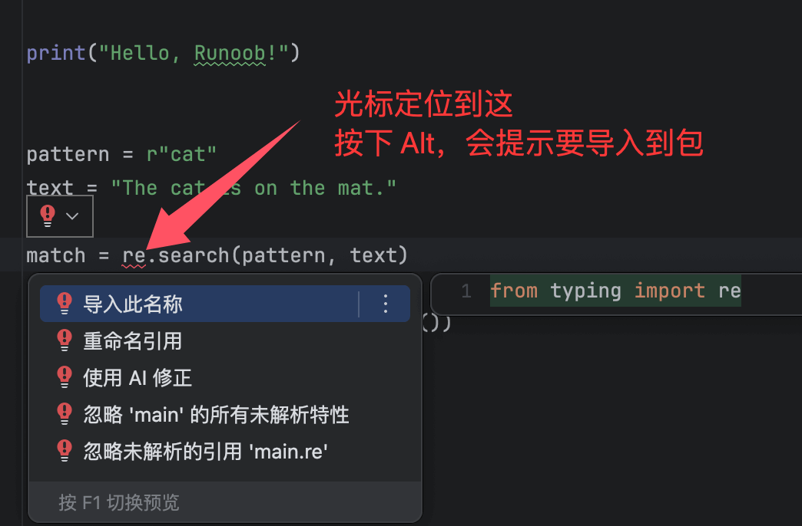

PyCharm コード編集
PyCharm はプロフェッショナルな Python IDE として、強力なコード編集機能を提供します。
この章では、コード編集のコア機能について詳しく説明します。スマート補完、ショートカットキー操作、コードリファクタリングなどの効率的な開発テクニックを含みます。
基本編集機能
コード補完（Code Completion）
PyCharm はさまざまなスマート補完方法を提供します：
| 補完タイプ | トリガー方法 | 説明 |
|---|---|---|
| 基本補完 | Ctrl + Space（Win/Linux）⌘ + Space（Mac） |
変数、関数、クラスなどの候補を表示 |
| スマート型補完 | Ctrl + Shift + Space |
コンテキストに基づいてより正確な型を推奨 |
| ファイル名補完 | パス入力時に自動的にトリガー | ファイルパスをすばやく補完 |
| 動的テンプレート補完 | 略語を入力（例main + Tab） |
コードスニペットをすばやく生成（例if __name__ ==...） |
入力im + Tab→ 自動的に次のように補完import:

入力for + Tab→ 完全な...を生成forループ構造:

構文ハイライト（Syntax Highlighting）
PyCharm はコード要素を自動的に色分けします：
-
キーワード（
def,class）：青 -
文字列：緑
-
コメント：グレー
-
誤った構文：赤い波線
カスタムハイライト：
-
设置 → 编辑器 → 配色方案（Color Scheme） -
Python 構文要素の色を調整

コード折りたたみ（Code Folding）
| 操作 | ショートカットキー（Win/Linux） | ショートカットキー（Mac） |
|---|---|---|
| 現在のコードブロックを折りたたむ | Ctrl + - |
⌘ + - |
| 現在のコードブロックを展開する | Ctrl + + |
⌘ + + |
| すべてのコードブロックを折りたたむ | Ctrl + Shift + - |
⌘ + Shift + - |
| すべてのコードブロックを展開する | Ctrl + Shift + + |
⌘ + Shift + + |
マウスをエディタのコード領域の左側に移動すると下向きの矢印が表示され、それをクリックしても折りたたむことができます：

折りたたみをサポートするコード構造：
-
関数/メソッド
-
クラス定義
-
複数行コメント
-
インポート文グループ
ショートカットキーと効率的な操作
よく使うショートカットキー早見表
| 機能 | ショートカットキー（Win/Linux） | ショートカットキー（Mac） |
|---|---|---|
| 現在の行をコピー | Ctrl + D |
⌘ + D |
| 現在の行を削除 | Ctrl + Y |
⌘ + Delete |
| 行を移動 | Alt + Shift + ↑/↓ |
⌥ + ⇧ + ↑/↓ |
| クイックフィックス提案 | Alt + Enter |
⌥ + Enter |
| 定義へジャンプ | Ctrl + B |
⌘ + B |
| パラメータヒントを表示 | Ctrl + P |
⌘ + P |
複数行編集と一括操作
列選択モード（Column Selection）
-
押したまま
Alt（Win）または⌥（Mac） + マウスドラッグ -
または使用
Alt + Shift + Insert列モードを切り替え
適用例：
# 批量修改多个变量前缀 old_name = 1 → new_name = 1 old_value = 2 → new_value = 2
マルチカーソル編集
-
押したまま
Alt+ マウスクリック（複数カーソルを追加） -
或
Ctrl + G（Win）/⌘ + G（Mac） 同じ単語を選択
コードフォーマットとリファクタリング
コードを自動フォーマット
-
現在のファイルをフォーマット：
-
Ctrl + Alt + L（Win/Linux） -
⌥ + ⌘ + L（Mac）
-
-
選択中のコードをフォーマット：
-
コードを選択 → 右クリック →Reformat Code
-
フォーマットルールを設定： 设置 → 编辑器 → 代码样式 → Python

変数/関数の名前変更（安全なリファクタリング）
-
識別子（変数/関数名）を選択
-
右クリック → Refactor → Rename
-
またはショートカットキー
Shift + F6 -
新しい名前を入力 → 押す
Enter
効果：
-
その識別子を参照しているすべての場所が同期して更新されます
-
ファイルをまたいだ名前変更に対応
メソッドの抽出（Extract Method）
選択したコード断片を新しいメソッドとして抽出：
-
コードブロックを選択
-
Ctrl + Alt + M（Win）/⌘ + ⌥ + M（Mac） -
メソッド名を入力 → 確認
例
def process_data(data):
cleaned = []
for item in data:
if item.is_valid(): # ← この部分のコードを選択
cleaned.append(item)
return cleaned
# 抽出後
def process_data(data):
cleaned = []
for item in data:
if is_valid_item(item):
cleaned.append(item)
return cleaned
def is_valid_item(item): # ← 自動生成された新しいメソッド
return item.is_valid()
インライン化（Inline）
メソッド/変数を呼び出し箇所にインライン化：
-
カーソルをメソッド名/変数に配置
-
Ctrl + Alt + N（Win）/⌘ + ⌥ + N（Mac）
# 内联前
def calculate_discount(price):
return price * 0.9
total = calculate_discount(100) # ← 光标在此行
# 内联后
total = 100 * 0.9 # ← 方法调用被替换为实际代码
高度な編集テクニック
ライブテンプレート（Live Templates）
よく使うコードパターンをすばやく生成：
-
略語を入力（例
iter） → 押すTab -
プリセットテンプレート：
-
main→ 生成if __name__ == '__main__' -
try→ 完全な try-except ブロックを生成
-
カスタムテンプレート：設定 → エディター → ライブテンプレート

コードエディタで「iter」と入力するとテンプレート情報が表示されます：

コードインテンションアクション（Alt+Enter）
コンテキストに基づいてコードをすばやく修正または最適化：
-
欠落しているパッケージを自動インポート
-
文字列形式を変換（f-string / format）
-
条件式を最適化
操作：カーソルを警告/提案箇所に配置 →Alt + Enter

まとめ：効率的な編集ワークフロー
-
作成段階：
-
コード補完を使用 (
Ctrl + Space) すばやく入力 -
動的テンプレートで繰り返し構造を生成
-
-
最適化段階：
-
コードをフォーマット (
Ctrl + Alt + L) -
用
Alt + Enter問題をクイックフィックス
-
-
リファクタリング段階：
-
メソッドの抽出 (
Ctrl + Alt + M) -
安全な名前変更 (
Shift + F6)
-
クリックしてノートを共有
ノートはこの記事の内容を拡張したものである必要があります！
記事の投稿は、ここをクリックしてください
登録招待コードの取得方法
ノートを共有する前にログインが必要です！
登録招待コードの取得方法